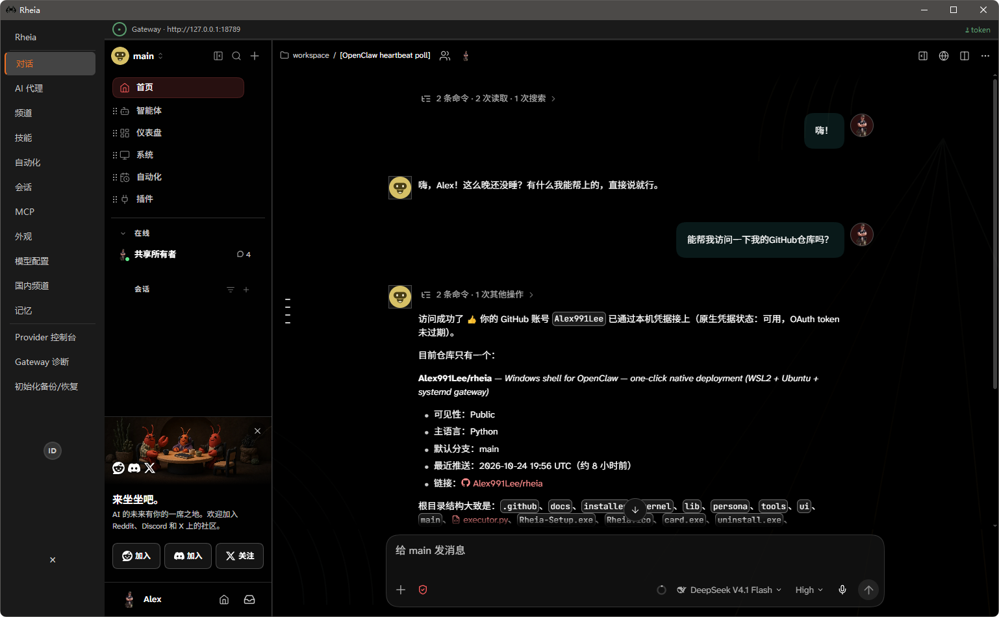

Server-grade OpenClaw on Windows — turned into one double-click.
Download Rheia-Setup.exe GitHub
WSL2 + Ubuntu + Node.js + official OpenClaw + a systemd gateway, in one pass. Ready when it finishes.
No dedicated distro. The Ubuntu you already run is the runtime — no second copy on disk.
No fork, no patch. Every upstream release is followed immediately, so you stay on the newest build.
| Official PowerShell install | Official Windows Hub | Rheia | |
|---|---|---|---|
| Form | Command-line install | WinUI desktop app | Desktop shell |
| Runtime | Native Windows process | Provisions its own WSL distro | Your existing WSL2 + Ubuntu |
| Existing Ubuntu | Not involved | Lives alongside it — a second distro on disk | Reused, zero waste |
| Start at boot | You set it up yourself | Tray app | systemd service, starts with the machine |
| Downloads in China | Upstream only | Upstream only | Domestic / international mirrors, automatic |
Once the gateway is up, the shell installs a set in the background:
@openclaw/tavily-plugin — web search@mem9/mem9 — persistent memory@weiwei2027/office-toolkit — Word / Excel / PPT / PDF@cindypapa/agent-browser — browser automation@paudyyin/summarize · @pskoett/self-improving-agent · @guipi888/find-skills · @spclaudehome/skill-vetterCompanions are installed too: LibreOffice (the soffice engine), the Chrome kernel, and python-docx / python-pptx / openpyxl / pymupdf / reportlab.
On some machines the UI flickers under PySide6 (QtWebEngine). The cause is in Chromium's compositor, not in application code. GPU flags, the D3D11 backend and reduced motion were all tried; they tame part of it, but we cannot guarantee every GPU.